USER GUIDE · VERSION 1.2.13
DEKXDIS User Guide
Start here if you have not used DEKXDIS before. This guide explains how to open the Windows app, protect your wallet, add funds, find your way around the screen, and place an order.
DEKXDIS uses a wallet stored on your computer. The wallet is protected by your Windows account and is not an account that DEKXDIS can reset for you. DEKXDIS never takes custody of your assets. Before adding funds, record the recovery phrase and private key shown for your wallet, and keep your backup safe and offline.
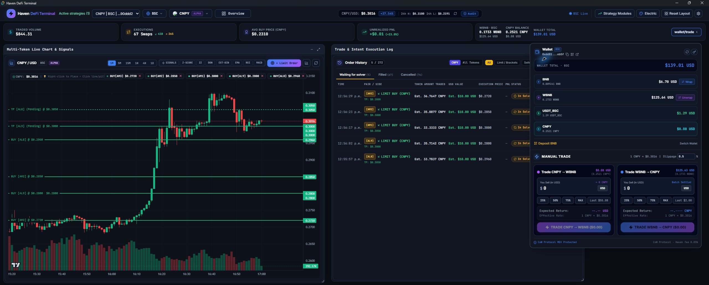
Before you start
- USD values: trading amounts and prices for all tokens are entered and displayed in USD. DEKXDIS handles the conversion and trades the actual tokens. Token quantities are shown alongside their USD value where useful.
- Token workspaces: each token has its own workspace. You can switch between tokens without interrupting trades on other tokens.
- Keep DEKXDIS open: DEKXDIS must remain open and connected to monitor trades and carry out automatic actions. You can minimize it while it works.
Quick start
You can either download the DEKXDIS precompiled EXE file or build it from source.
Download and open the Windows app
- Open the DEKXDIS release page, expand Assets, and download
DEKXDIS.exe. - Open your Downloads folder and double-click
DEKXDIS.exe. The current build is not digitally signed, so Windows may show an unknown-publisher or SmartScreen message. Continue only if the filename and download source are the ones you expected.
Want to inspect the program before using it? Go to Download the source code and build the Windows app.
Set up DEKXDIS for the first time
1. Back up your wallet
Let the first screen finish loading. On a fresh installation, DEKXDIS creates a wallet and opens its backup window. To use an existing wallet, choose Import / Switch and import its private key or recovery phrase.
Select Reveal in Backup Key to display the private key and any saved Secret Recovery Phrase. New wallets include a 12-word phrase. Wallets imported using only a private key may have no saved phrase; back up their complete private key. Write down the complete private key and the Secret Recovery Phrase shown for your wallet. Copy every recovery word in its numbered order onto paper or another offline record, and check your copy carefully. If DEKXDIS asks for a backup check, enter the private key’s last six characters and select the confirmation button to continue. Keep the backup private and separate from this computer.
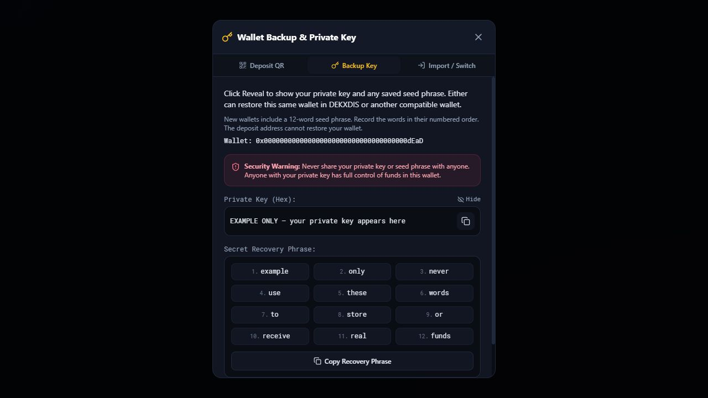
2. Open Overview first
Select Overview near the top-left of DEKXDIS. Start in the Asset Overview window to see your balances and deposit controls by network.
The network and asset selectors are beside the DEKXDIS logo. You will use them when you return to the trading screen.
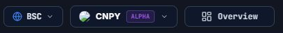
3. Choose the receiving network in Asset Overview
Find the column for the network you intend to use, then select its Deposit button. For example, use the button below BNB Smart Chain for a deposit on BNB Smart Chain.
Asset Overview has a separate column for each supported network. The same wallet address can appear on several networks, but each network has separate balances and transactions.
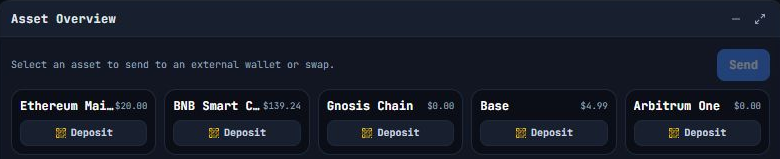
4. Send a small test deposit
In Deposit to Wallet, check the network printed above the address. Copy your own address or scan the QR code from DEKXDIS. At the sending wallet or exchange, select that exact network and send a small test amount first.
Return to Overview and select Sync. Wait for the confirmed deposit to appear in the matching network column before adding more.
You can also deposit from the trading screen: choose the network in the top bar, then use wallet/trade → Wallet → Deposit or its QR icon. This opens the same deposit window.
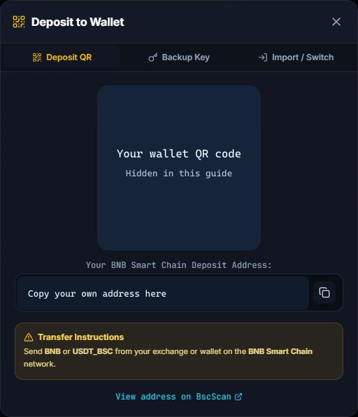
5. Prepare the trading balance in Asset Overview
Check the Native Gas Tokens and Wrapped Tokens rows for your network. If you deposited native tokens, select that native-token tile first, then its wrapped-token tile in the same column. For BNB Smart Chain, select BNB, then WBNB.
Review the conversion in Token Swap, enter the USD amount to convert, and leave some native tokens for gas. If you deposited another supported token, use Asset Overview to exchange it for the network’s wrapped trading asset. See Trading assets by network and asset swaps and cross-network transfers.
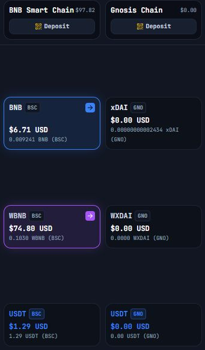
6. Return to the trading screen
Select Trading Terminal at the top-right of Overview. Confirm the network in the top bar, then use the asset selector to search for the token you want to view or trade.
Each token has its own workspace. Selecting a different token switches to that token’s page, keeping its chart, orders, and trading activity organized together.
Select wallet/trade in the top-right balance card to expand the wallet and trading controls. The wallet shows your native-token, wrapped-native-token, and USDT balances for the selected network, along with the balance of your selected token. These are balances on that network; balances on other networks remain separate.
Trades exchange the selected token for the network’s wrapped native token. A buy spends wrapped native tokens to purchase the selected token; a sell exchanges the selected token back into wrapped native tokens.
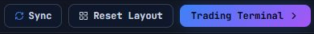
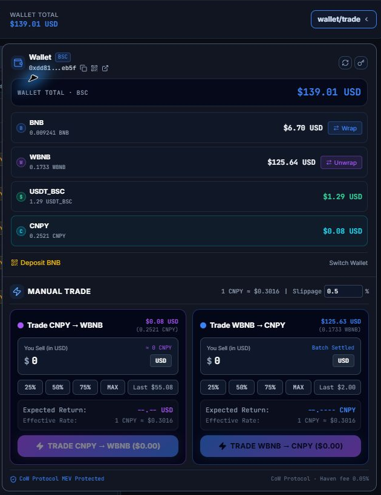
Place an order from the chart
Once your trading balance is ready, right-click anywhere in the chart’s price area to open the order window. The price where you click is entered in Target Limit Price ($). You can change it before submitting.
For a buy, choose Limit Buy, then enter the amount you want to spend in Spend Amount (USD) below the limit price.
Amounts and prices are entered in USD for convenience. DEKXDIS converts them into the appropriate token quantities and trades the actual tokens for you.
At the bottom of the order window, select the Take-Profit (TP) or Stop-Loss (SL) checkbox, or both. Enter each target price in USD or enter a percentage; the percentage buttons provide shortcuts. For a buy, set take profit above the entry price and stop loss below it. Review your settings, then select Submit Limit Buy.
A solid line on the chart marks the limit buy. If you added take profit or stop loss, a dashed green TP line or dashed red SL line marks each pending exit.
After the buy fills, DEKXDIS creates the exits for the actual number of tokens received, and their chart lines become solid. The take-profit order goes to the solver; DEKXDIS monitors the stop loss locally and submits a sell when its trigger price is reached. If either exit fills, DEKXDIS cancels the other. Keep DEKXDIS open and connected for these automatic actions.
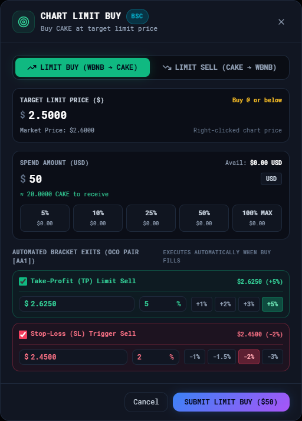
Find your way around the workspace
Begin with Overview and Asset Overview to add and prepare funds. On the trading screen, use the network and asset selectors and the wallet/trade menu. The chart helps you choose prices, Order History tracks submitted orders, and the metrics strip summarizes recorded trading activity.
The images below are close-ups from DEKXDIS. Panel positions can differ because you can move and resize them. Follow the panel titles and button labels. Select any image to see it at full size.
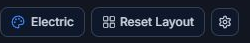
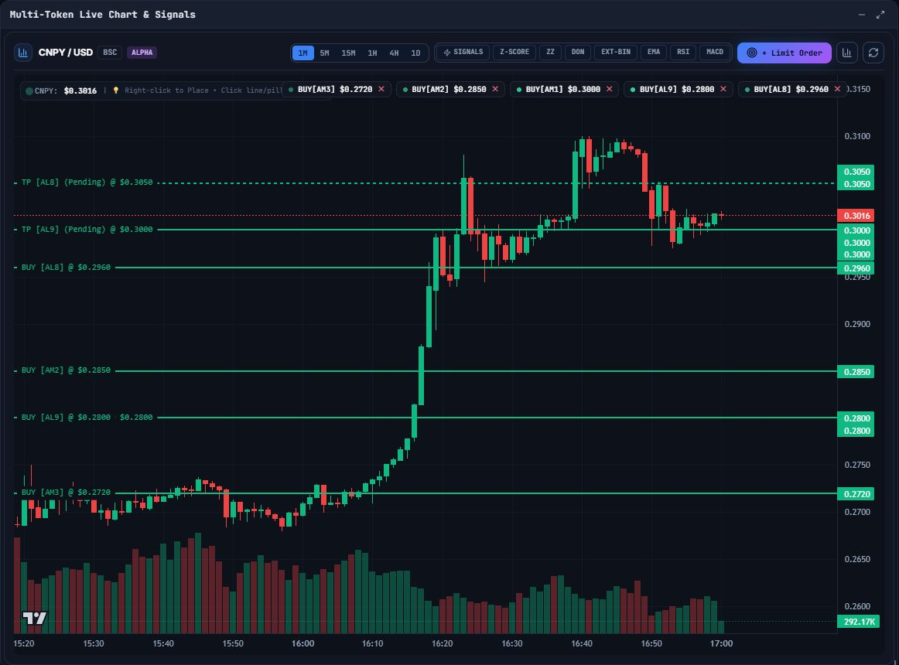
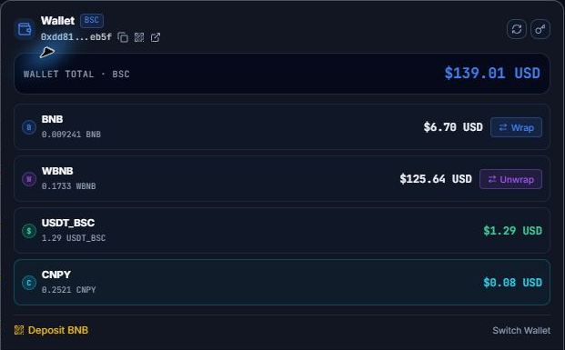
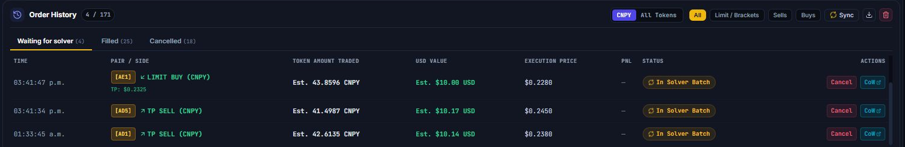
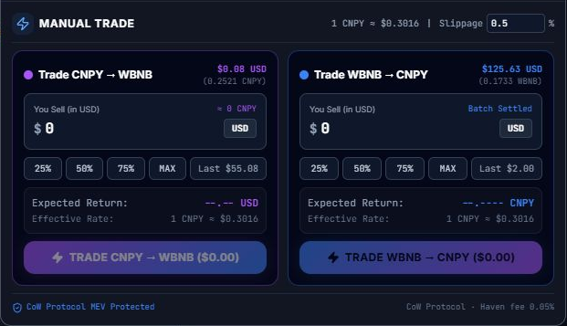
- Network and asset
- These two choices control the balances, chart, prices, and trading controls shown in the workspace.
- Workspace buttons
- Use Overview for the multi-network page, the color button for themes, Reset Layout to restore panel positions, and the gear button for settings.
- Market strip
- Shows the selected asset’s current price, 24-hour change, high, and low. The refresh and Audit buttons are beside it.
- Movable panels
- Drag a panel by its title bar. Use the minus button to minimize it, the square button to maximize or restore it, and its edges or bottom-right corner to resize it. A minimized panel becomes a small title bar; either Restore Window button brings its contents back. Reset Layout restores the starting arrangement.
Keep a complete wallet backup
Select Reveal in the backup window to display the Secret Recovery Phrase and private key. Write down every recovery word in the order shown and copy the entire private key exactly. Record all recovery details displayed for your wallet; the receiving address is not a backup.
Reopen the window from the key icon in wallet/trade → Wallet, then select Backup Key and Reveal. If a backup check appears, check your written copy, enter the requested last six private-key characters, and confirm.
Backup details hide after 60 seconds, when you change wallet-window tabs, or when you close the window. Anything you copy may remain in Windows clipboard history.
Wallet and adding funds
Open the wallet controls
Select wallet/trade in the balance card above the chart. The Wallet section shows balances for the selected network. Its controls are:
- Generate Brand New Wallet — available inside Switch Wallet → Import / Switch. Creates another wallet and keeps previously saved wallets. Record the new wallet’s recovery details before depositing to it.
- Switch Wallet — opens Import / Switch. Paste a private key or recovery phrase to add that wallet, or generate another wallet. To activate a wallet already saved in DEKXDIS, import its private key or recovery phrase through this same window. Only the active wallet can sign a transaction.
- Deposit [native asset] / QR button — opens your deposit address and QR code for the selected network.
- Backup Key / Seed Phrase — the key icon opens the active wallet’s backup window. Reveal displays its private key and any stored Secret Recovery Phrase. Record every recovery word in its numbered order. Use a copy button only if you understand the clipboard risk.
- Wrap / Unwrap — changes the network’s native asset into its wrapped form, or back again. The wallet needs native asset for network fees.
- Refresh Balances — the circular-arrow button fetches balances again and retries a failed wallet USD valuation. Read the System Log for any valuation error.
Add funds through Overview
- Select Overview in the top bar and find the Asset Overview window.
- Choose the receiving network’s column and select its Deposit button. For example, use the BNB Smart Chain column for a BNB Smart Chain deposit.
- In Deposit to Wallet, copy the displayed address with the copy icon, or scan the QR code from the sending wallet or exchange.
- At the sending service, choose the same network shown in DEKXDIS. Paste the address, choose the asset and amount, then review the first and last characters of the address.
- Send a small test amount first. Wait for the sending service and the network to confirm it, then select Sync on Overview.
- Once the test is visible, send the rest if desired. Keep some native asset on every network you use: it pays for approvals, wrapping, transfers, and other on-network actions.
You can also use wallet/trade → Wallet → Deposit [native asset] or its QR icon after choosing the network in the top bar. Asset Overview and the wallet/trade menu open the same deposit window.
Deposit, backup, and import window
- Deposit QR shows a scannable code, the full address, a copy button, and a link to view the address in that network’s public explorer.
- Backup Key opens the backup details. Use Reveal to view the private key and the recovery phrase stored for that wallet; write down all the details shown. Hide removes both from view, and they hide automatically after 60 seconds. If no phrase is stored, restore the wallet with its complete private key.
- Import / Switch accepts a private key or recovery phrase. Select Import & Activate Wallet after pasting it. Generate Brand New Wallet creates a separate wallet.
- X closes the window. Closing it does not confirm your backup. Deposit QR stays unavailable in this window until the check is complete. Reopen Backup Key and finish the check before funding the wallet.
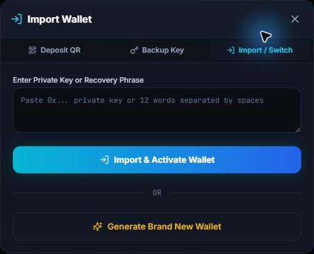
Wrapping and switching wallets
Wrap or unwrap a native token
- Select Wrap or Unwrap in wallet/trade → Wallet, then check the direction selected in the window. Both wallet buttons open the same window.
- Enter the USD value to convert, or use the 25%, 50%, 75%, MAX or $10, $25, $50, $100 shortcuts. Review the resulting token quantity and the available balance.
- Select the button naming the conversion, and wait for its network confirmation. Wrapping exchanges native and wrapped units one for one; keep native tokens available for gas. Refresh the wallet balances after completion.
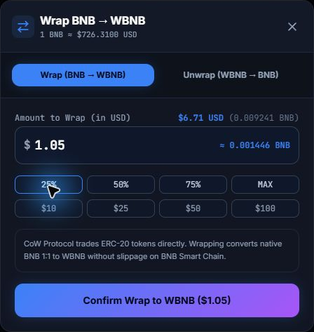
Switch an active wallet
DEKXDIS keeps saved wallets on this computer, with separate order histories. Open wallet/trade → Switch Wallet or Overview → Wallet Creation → Import or create wallet. In Import / Switch, enter that wallet’s private key or recovery phrase and select Import & Activate Wallet. Reimporting a saved private key keeps its existing recovery phrase.
If the current wallet has open or pending orders, DEKXDIS shows Confirm wallet switch. Choose Keep current wallet to stop, or Cancel orders and switch to request cancellation first. DEKXDIS keeps the current wallet active if any order cannot be confirmed cancelled or otherwise closed. Check Order History and the System Log before trying again.
Trading assets by network
You enter your trade amount in USD. DEKXDIS converts that amount into tokens for the trade. The network you select determines which token funds a buy and which token you receive when you sell.
| Network | A buy spends | A sell receives | Keep for network fees |
|---|---|---|---|
| BNB Smart Chain | WBNB | WBNB | BNB |
| Ethereum | WETH | WETH | ETH |
| Arbitrum | WETH | WETH | ETH |
| Base | WETH | WETH | ETH |
| Gnosis | WXDAI | WXDAI | xDAI |
Example on BNB Smart Chain: in the CNPY workspace, a buy exchanges WBNB for CNPY. A sell exchanges CNPY back into WBNB. You still enter the amount and target price in USD.
WBNB, WETH, and WXDAI are wrapped versions of their network’s native token. Use Wrap to prepare them for trading and keep some native tokens for network fees. Use Unwrap to convert them back.
USDT is a separate token; it is not the same as USD and is not the asset used to fund these workspace buys. If your funds are in USDT or another supported asset, exchange them in Overview → Asset Overview first. Asset swaps and cross-network transfers use the assets you select in those forms.
Select a token other than the wrapped native token for workspace trading; DEKXDIS cannot swap a token for itself.
How CoW Protocol is used
You do not trade directly with DEKXDIS. DEKXDIS prepares the order and signs it with the wallet stored on your computer, then sends the signed order to CoW Protocol. Independent solvers compete to complete it under the conditions you accepted. Your private key is not sent with the order.
Accepted does not mean completed. After you submit an order, open Order History and watch its status. An order may remain open, fill, expire, be cancelled, or show that it needs attention. New orders request a complete fill; check the confirmed execution record rather than treating a quote as a fill.
Before DEKXDIS can sell an asset for the first time, it may need an Approve transaction. Approval gives the CoW VaultRelayer permission to transfer that token for settlement of your signed orders. It is separate from the order itself and costs a network fee. Use Sync to request the latest order status and Cancel to request cancellation of an order that is still open.
Trading workspace
Top bar
The top bar sets the context for the entire trading screen. Check the network and asset here before entering any amount.
- Network selector — changes the network used by the wallet, asset list, chart, approvals, and new orders.
- Asset selector — searches by symbol, name, or contract address. Select an asset to make it active. Its pin box keeps it near the top of the list. + Add Token by Contract Address opens the token-import window.
- Overview — opens the portfolio page for all supported networks. The button reads Dashboard Active while that page is open; select Trading Terminal there to return.
- Theme — opens the color choices. The button displays the name of the current theme on wider windows.
- Reset layout — returns movable panels to their default size and position.
- User Guide — opens this guide in your browser.
- Settings — opens network connection, theme, trade slippage, stop-loss slippage, and Windows startup settings.
- Price refresh — the small circular-arrow button requests the latest price. Audit opens the security and liquidity report for the active asset.
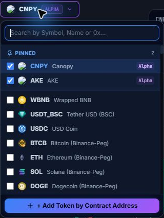
Chart and indicators
Use 1M, 5M, 15M, 1H, 4H, and 1D to choose one-minute through one-day candles. Z-Score shows price channels; ZZ shows swing pivots; DON shows Donchian channels; EXT-BIN shows extrema-based support and resistance; EMA shows the 20- and 50-period averages; RSI and MACD open lower indicator panels. The chart’s Reset Zoom button fits all loaded candles into view, and its circular-arrow button refreshes candles. Hover over the chart to inspect a candle.
To begin a limit order at a specific price, right-click that price on the chart. You can also select + Limit Order to start at the current price and edit it in the form. Active order lines appear on the chart. Clicking or right-clicking close to one of those lines requests cancellation, so take care when selecting a price near an existing order. When you change the token, network, or timeframe, DEKXDIS clears the previous chart while it loads the new history. Temporary connection failures retry automatically with a finite backoff sequence. If loading stops with Candlestick Feed Error, read the reason and select Retry Query to try again. The circular-arrow Refresh Candles button requests fresh history. Chart entry controls wait for history and a valid price; failed requests and recovery are recorded in the System Log.
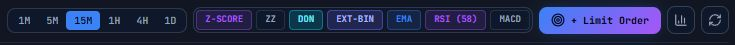
Manual Trade panel
The left side sells the selected asset for the network’s wrapped trading asset. The right side spends the wrapped trading asset to buy the selected asset. Both amount boxes use USD. 25%, 50%, and 75% calculate a share of the available balance. MAX leaves a small USD buffer and rounds the budget down. Last $…, when present, recalls the last submitted USD amount for that side. Wait for Expected Return to show a quote before submitting. The displayed return is an estimate; confirmed quantities appear in Order History.
- Confirm the selected network and asset in the top bar.
- Choose the direction and enter an amount, use a percentage shortcut, or recall the last submitted amount.
- Review the expected return, effective rate, and slippage at the top of the panel. You can edit that percentage there; it shares the standard trade setting in Settings. If DEKXDIS needs approval, it submits that network transaction before the order.
- Select the button that names the direction and amount. Do not close DEKXDIS until the order appears in Order History or an error is shown in the System Log.
Limit orders, take profit, and stop loss
Open the form by right-clicking the chart or selecting + Limit Order. Choose Limit Buy or Limit Sell, then enter the USD target price and USD amount. The 5%, 10%, 25%, 50%, and 100% MAX buttons calculate an amount from the available balance. On the sell side, the form divides the USD amount by your target price to calculate the token quantity; check the displayed quantity before placing it.
- Limit Buy: optionally enable take profit (TP), stop loss (SL), or both. Set each exit with a percentage or explicit USD price, and check the resulting prices. TP must be above the entry price and SL below it. The exits are created after the buy is confirmed filled.
- Limit Sell: a target at or above the current market price creates a take-profit limit sell. A target below it creates a locally monitored stop loss. Add Connected Stop-Loss or Add Connected Take-Profit adds the opposite exit for the same token quantity. Its percentage field and shortcuts use the current market price as their reference.
- OCO: linked exits share a short tag such as AA1. When DEKXDIS confirms one has filled, it requests cancellation of the other. Cancellation is not instantaneous. Manually cancelling an active linked exit requests cancellation of its active partner too.
An attached exit sells the quantity actually received by its entry. If a $10 USD buy receives 8 AKE, its TP or SL is sized for those 8 AKE; changing the exit price does not reduce it to $10 USD worth of AKE. Check both the entry status and its protection status in Order History.
DEKXDIS converts USD budgets and limit targets into token amounts when it creates an order. Submitted token amounts stay fixed, so later changes in the wrapped asset’s USD price can change their USD equivalent. CoW limit orders use a 30-day validity period; local stop instructions are monitored by DEKXDIS. Review the summary before selecting the placement button.
Reading OCO orders on the chart
This example shows three unfilled limit buys, each with an attached take-profit (TP) and stop-loss (SL) pair. OCO means one cancels the other: after a buy fills and its exits are created, DEKXDIS requests cancellation of the paired exit when it confirms that the other exit has filled.
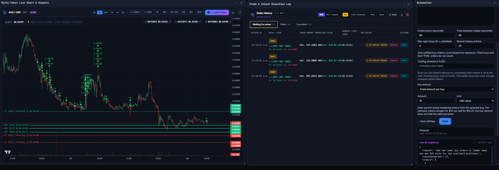
- Three solid BUY lines: each marks the entry price of a separate open limit buy. The short tag in brackets connects a chart label to its order-history row.
- Why only one TP line? All three buys have the same TP target, $0.03450. Their three dashed green lines sit directly on top of one another, so they look like one line. Their labels overlap too; a visible tag does not mean only that buy has a TP.
- Why two SL lines? One buy has an SL at $0.03100, while the other two share $0.03000. The two lines at $0.03000 overlap, leaving two visible dashed red levels. Each buy still has its own SL setting.
- What do the dashed lines show? The green TP and red SL lines labelled (Pending) show the planned exit prices attached to buys that have not filled. They are not yet active sell orders. After a buy is confirmed filled, DEKXDIS creates its exits for the tokens actually received: the TP is submitted to CoW and the SL is monitored locally until triggered. Their chart lines become solid when those exits are created.
- Why does Waiting for solver show only 3? At this stage, only the three limit buys exist as open orders. Their pending TP and SL settings appear beneath each buy in Order History and do not add six more open orders. Separate exit records are created after each buy fills. The number of visible chart levels is therefore not an order count.
Order history
Choose the active asset or All Tokens (across networks for the active wallet), then use All, Limit / Brackets, Sells, or Buys to filter the rows. The Waiting for solver, Filled, and Cancelled tabs separate order states; expired orders appear under Cancelled. Each row shows its time, pair and direction, Token amount traded, adjacent USD value, price, PnL where available, and status. Filled buys show tokens received; filled sells show tokens sold. Unfilled quantities and USD values are marked Est., and their price can be a target or quote. Missing confirmed amounts or USD conversions show Unavailable. USD values use the recorded conversion; they are not a continuously updated wallet valuation.
Sync asks CoW for the latest state. Cancel requests cancellation of an open or pending order. CoW opens the order in CoW Explorer; a network-name link opens its transaction when available. Local stop · app must stay online identifies a stop loss that DEKXDIS is monitoring. A Needs attention message means an order or its protection needs review. Check the System Log for the reason.
The download button exports all recorded orders for the active wallet as CSV, across tokens and networks, regardless of the selected filters or status tab. Its Sell Amount and Buy Amount columns contain stored order amounts and can differ from confirmed fills; use the Filled rows for confirmed token quantities. The trash button clears completed history for the chosen token/network scope or for All Tokens after confirmation; it does not cancel orders or remove active and pending records. Confirmed fills remain in the accounting totals after you clear visible history.
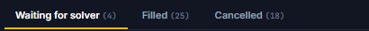
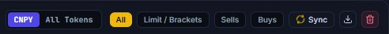
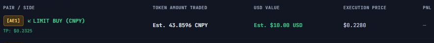
Trading metrics
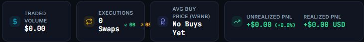
The Unsold buys count in Order History shows how many filled buys still have tokens held. Pending exits do not lower it. The metrics strip follows the selected token and network. Traded Volume totals recorded buy spending and sell proceeds in USD. Executions counts usable confirmed fills and separates buys and sells. Avg Buy Price is the average price across recorded buys. Unrealized PnL estimates the change in value of the remaining recorded position, using a moving-average entry cost. Realized PnL totals the confirmed linked-exit profits and losses for that token and network. Unmatched sales without a recorded PnL are excluded.
Order History’s TP/SL PnL uses confirmed exit proceeds and the corresponding share of the linked entry cost. It shows Unavailable when the required fill or conversion data is missing. These figures do not supply an entry cost for externally deposited tokens and do not include separate network gas costs.
Set Your Price. Capture the Surplus. Pay 0% in Flat DEKXDIS Fees.
CoW Protocol also charges a small 0.02% volume fee for standard assets. If no surplus is generated, that fee still applies. This has been rare in our own trading: only two out of more than 1,000 trades produced no surplus. Read on to understand how it works.
When you trade on our platform, you are always in complete control. You set the exact price you want for your tokens—your order will swap at that price, and absolutely no less. But it can be more.
Through our integration with CoW Protocol, we utilize an advanced network of independent "solvers" to match your orders. Instead of relying on a single liquidity pool, solvers tap into a vast web of secure sources—including on-chain pools, major exchanges, and private peer-to-peer sale orders—to find you the best possible rate.
The best part? The solvers only get paid if they save you money by generating a surplus on your order. This performance-driven structure guarantees that everyone's incentives are perfectly aligned.
How it Works (The $100 Example)
Imagine you want to sell Token A. You place an order intent stating you want to receive exactly $100 USD for your tokens.
- The Solver Auction: Your order goes out to a competitive batch auction where solvers bid to find you the absolute highest return. Solver 1 finds a route for $101, Solver 2 finds one for $102... Sold!
- The Surplus: They just secured an execution price that is $2.00 more than you were originally asking for. This $2.00 is your trade surplus.
- The Clear Payout Breakdown:
- CoW Protocol Fee: CoW Protocol charges 50% of the surplus (capped at 0.98% of total trade volume), plus a 0.02% volume fee for standard assets. Together, these amount to approximately $1.020 in this example.
- Dekxdis Fee: Our platform takes a 25% performance cut of the surplus remaining after CoW Protocol fees (capped at 1% of trade volume), which amounts to approximately $0.245.
- Your Share: You keep the remaining surplus after those capped fees. In this scenario, you walk away with approximately $0.735 extra, receiving $100.74 after rounding.
You received exactly what you wanted for your tokens, all platform and protocol infrastructure costs were fully covered, and you walked away with extra money in your wallet. It is a true win-win for everyone.
Why This Beats Traditional Exchanges
- No Artificial Markups: Say goodbye to hidden fees, artificial spreads, and slippage nonsense.
- Minimal Cost for Base Execution: If the market doesn't allow solvers to find a surplus, CoW Protocol still charges its 0.02% volume fee for standard assets—about $0.02 on a $100 trade. There is no surplus-based payout, and Dekxdis doesn't get anything. This has been rare in our own trading: only two out of more than 1,000 trades did not generate a surplus.
- No Risk on Cancellations: If you decide to cancel your order before it fills, you pay nothing.
- Outperforming Centralized Exchanges (CEXs): Traditional centralized platforms charge flat fees anywhere from 0.1% up to 2% on your total order size. On a $100 trade, a standard exchange might swallow your funds in fees, leaving you with only $98 for tokens you wanted $100 for. In this example, on our platform you leave with $100.74.
Ready to see how intent-based trading protects your capital? Explore CoW Protocol here to learn more about the underlying architecture, or download the Dekxdis software to start trading for free today.
Workspace automation
The Automation window saves a separate prompt and settings for each token. Enter your instructions, an image-capable OpenAI model ID and your API key, then select Start. Enabled tokens continue running when you switch workspaces. Stop ends new decisions; existing orders remain managed by the trading engine. Automation starts stopped after reopening the app.
Each check sends a fresh image of that token's chart, current orders, bought positions, recent trade history and balances. The input package is discarded after the check. Last AI response remains visible until the next response, including when you reopen the window.
Buy settings and trading allowance
Set the check interval, time between trades, maximum open buys, history length and buy amount. The maximum counts only buys that have not filled. Filled buys and their TP or SL orders do not occupy an open-buy slot.
Trading allowance (USD) is independent for every token. Buys consume it, pending buys reserve it, and completed sells replenish it up to the limit. Blank means unlimited; zero prevents new automation buys. The actual wallet must still hold enough wrapped native tokens. The setting does not divide your wallet balance among tokens. The allowance is calculated from the main trade history, including manual trades, and survives restarting or clearing visible history.
Unsold buys and exact token exits
Unsold buys appears in Automation and the selected token's Order History. It counts filled buys with tokens still held. A partial sale keeps the buy counted until its final tokens sell. A pending sell reserves tokens and does not reduce the count. Automation shows both held tokens and the quantity available for another exit; tokens assigned to TP, SL or a pending sell are already reserved.
The model sees each bought position, its purchase cost, actual remaining token quantity, available quantity and entry price. It can identify the buy it wants to sell. If it does not choose one, the application selects the oldest available buy. A strategy sale uses the available remainder of that buy; your fixed USD buy amount does not cap the sale.
For example, a $10 buy at $2 per token receives 5 tokens. Selling those 5 tokens at $2.05 returns $10.25 before any difference in actual execution. Once confirmed, Order History displays the actual USD proceeds and the $0.25 profit if those were the recorded fills. USD is for display and convenient input; orders trade actual token quantities.
Each strategy sale links to its original buy for profit reporting, including after the buy disappears from visible history. Fill prices use confirmed quantities and the recorded USD conversion. The packet also includes the weighted average entry price of tokens still held. A prompt can request a minimum selling margin, but there is no separate enforced minimum-profit setting.
Overview page and bridge
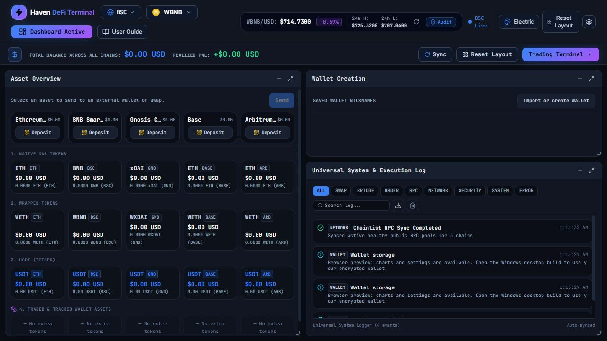
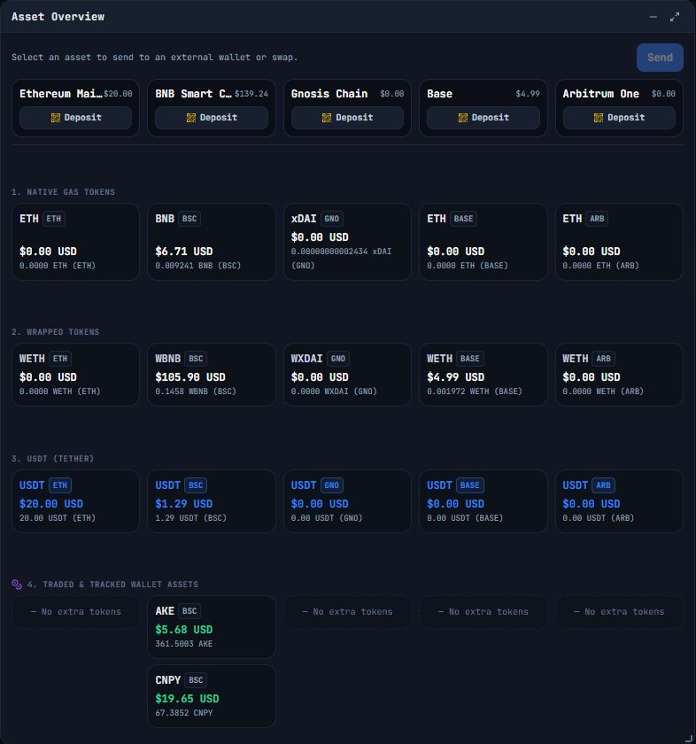
Select Overview in the top bar when you want to see balances and activity across all supported networks. Sync refreshes all balances, Reset Layout restores this page’s panels, and Trading Terminal returns to the main workspace. Realized PnL in the Overview header totals recorded linked-exit profits and losses across tokens, networks, and wallets. The minimize, maximize, drag, and resize controls work the same way on both pages.
- Asset Overview — shows balances by network. Use a network’s Deposit button to open its receiving address. Select one asset, then another, to open the available wrap, same-network swap, or cross-network route. Review the source, destination, amount, estimated receipt, route fee, and network fee before confirming.
- Wallet Creation — lists saved wallet addresses and their local nicknames. Use Import or create wallet to open wallet setup.
- Universal System Logger — records activity, warnings, and errors. Use a category filter or ERROR, and enter text in Search log... to find a title, detail, category, or transaction hash. Export JSON Log downloads all retained entries, including those hidden by filters. The log retains up to 500 entries. Clear Logs erases the retained log immediately; export it first if you need a copy.
Send an asset to another wallet
Open Overview → Asset Overview. Select the asset tile on the network you want to use, then select Send above the tiles. The button names your selected asset. The receiving wallet does not need to be saved or imported into DEKXDIS.
- Check the Network, sender address, and token contract when shown. Paste the full receiving address into Recipient wallet address with Ctrl+V, or type it.
- Enter an Amount (USD). DEKXDIS converts that amount into the selected asset's actual token quantity. Alternatively, choose MAX to use the available token balance. Native-token MAX keeps a gas reserve; token transfers need separate native tokens for gas. Select Enter amount to leave MAX mode.
- Select Review transfer. Check the full recipient address, exact token amount, estimated USD value, network, and gas reserve. The review lasts 30 seconds. Use Edit transfer to change it or Refresh review after it expires.
- Select Confirm and send to submit the reviewed transfer. Follow the result and select View transaction to open the network explorer. The X closes the dialog when submission is not in progress.
Expand Recent sends at the bottom of Asset Overview to see recorded transfers, token quantities, recipient addresses, and their network. Any USD amount there is the estimate at review. For a pending transfer, Check status looks for confirmation; Resume original transaction resumes the same signed transaction. Confirmed on-chain means a receipt was verified. Failed and Receipt requires inspection include the reason; inspect the transaction and System Log before taking another action.
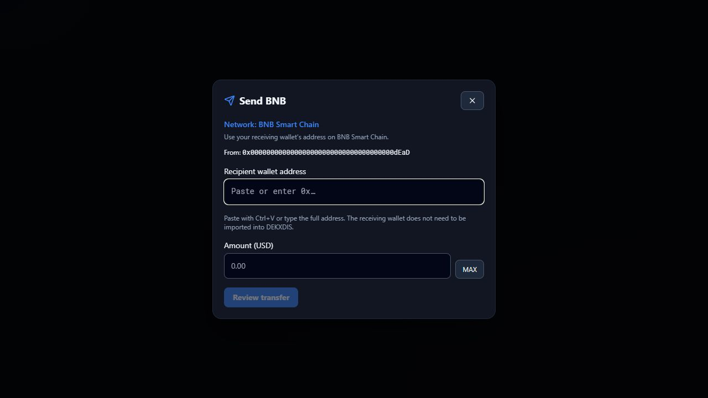
Swap assets or move them between networks
- In Asset Overview, select the token you want to spend, then the token you want to receive. The first selection is the source. Clicking it again clears the selection.
- In Token Swap or Cross-Chain Transfer, check both assets and networks. Enter a USD amount or use the percentage shortcuts. 100% MAX fetches a spendable amount and allows for required native gas; an ERC-20 balance still needs separate native tokens for fees.
- Wait for the quote, then review the token quantities, USD values, route, fees, and estimated duration. Quotes and durations are estimates. If the quote expires or a route fails, read the error and obtain a new quote before submitting.
- Confirm the operation. A native-to-wrapped conversion waits for its network confirmation. Other same-network swaps are submitted to CoW and must fill before they are complete; follow them in Order History. A bridge must reach destination delivery; partial delivery, refunds, and failures are recorded in the System Log.
For a same-network swap involving native tokens, first wrap the source token or choose the wrapped destination and unwrap after settlement. Cross-network transfers use CoW Protocol with the selected assets and a supported bridge provider. The confirmation shows the quoted route. A transfer remains pending until source settlement and destination delivery are confirmed. Not every pair or amount has an available route; the quote shows the provider's reason when a route is unavailable.
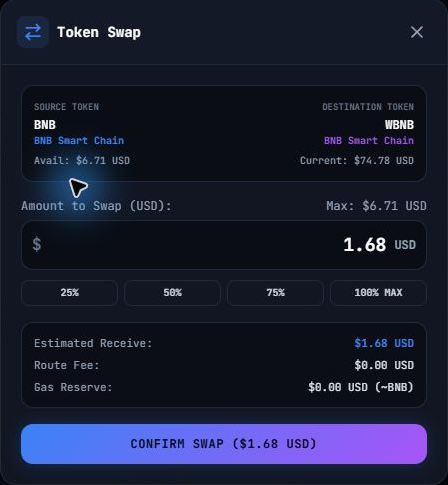
Create, import, and name wallets
Open Overview → Wallet Creation at the upper right. Import or create wallet opens Import / Switch. Import a private key or recovery phrase, or select Generate Brand New Wallet and complete its backup check.
Each saved wallet shows its full address. Active identifies the wallet currently in use. Enter a label in Add a nickname, then select Save nickname. Nicknames are local labels of up to 40 characters. Clear the field and save to remove a nickname.
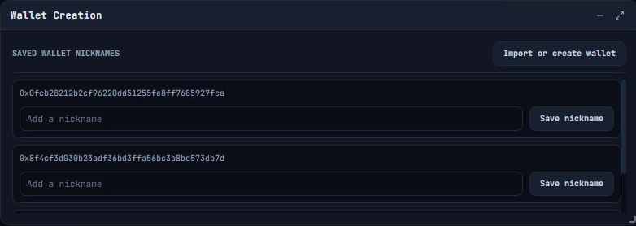
Find and export the System Log
On Overview, find the Universal System & Execution Log window. Select a category or ERROR to narrow the entries. Use Search log... to search their details.
The downward-arrow button beside the search box exports the JSON log. The trash button clears the retained entries immediately.
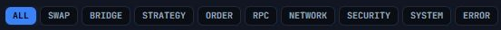
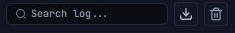
Assets, token checks, and appearance
Add a token by contract address
From the asset selector, choose + Add Token by Contract Address. Confirm the network, paste the contract address, and select Inspect. DEKXDIS displays the token name, symbol, decimals, address, available security information, and available liquidity information. An unknown result is not the same as a safe result. Select Import & Set Active only after verifying the address from a source you trust. To inspect another token, change the address and select Inspect again. Use Retry after an inspection error, or Cancel / X to close. If DEKXDIS finds the contract on another supported network, it changes the network shown in the form; verify that network before importing.
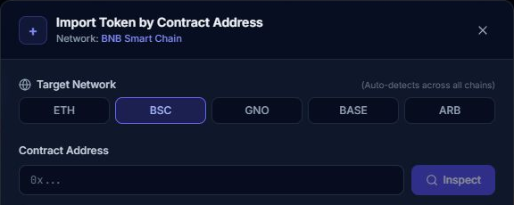
Token Security & Liquidity Audit
Use Audit beside the market price to inspect the active asset. The report can show contract checks such as honeypot behavior, mintable supply, blacklist behavior, buy or sell taxes, and liquidity pools. The circular-arrow button runs the checks again. Explorer and pool links open external sites. A missing or unknown result means DEKXDIS could not confirm that item; it is not a safety guarantee.
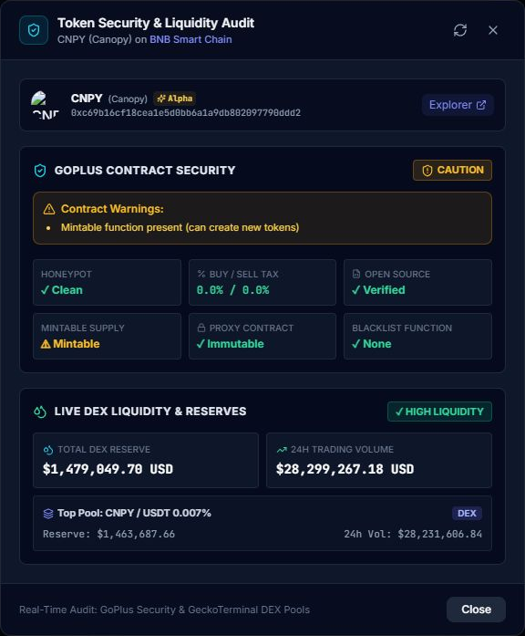
Settings and themes
Most users can leave the connection settings unchanged. Sync Chainlist asks DEKXDIS to refresh its public RPC list. For a private provider, use custom URLs or choose Alchemy, Ankr, Infura, or QuickNode; enter the requested URL or key, use Ping Node to test each network, then select Save RPC Settings. Apply to All Chains fills supported endpoints from one provider key, and Reset to Chainlist Defaults removes the custom entries. QuickNode requires its own endpoint URLs; quick-fill populates only networks supported by the selected provider. These settings are stored in the local encrypted vault.
The theme tiles apply and save the application colors when selected. Trade Slippage Tolerance (Standard) sets the minimum-received tolerance for manual current-price trades; its preset buttons are 0.1%, 0.5%, 1%, and 2%. Emergency Stop-Loss Slippage sets the tolerance for a submitted local stop exit, with 1%, 2%, 3%, and 5% presets. A higher tolerance allows a worse execution price and does not guarantee a fill. The Asset Overview swap and bridge flows use their own 0.5% tolerance. Select Done or X to close Settings.
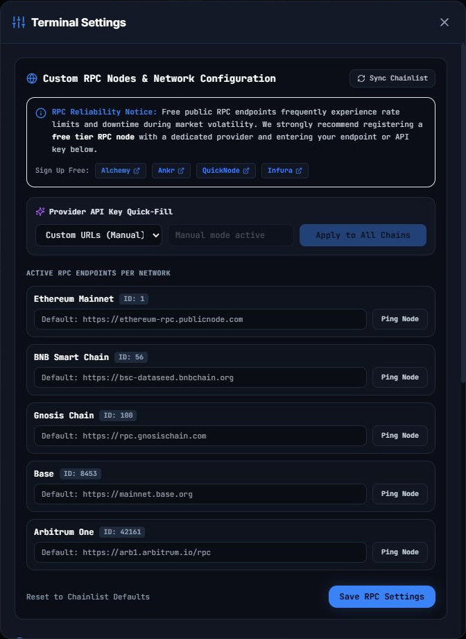
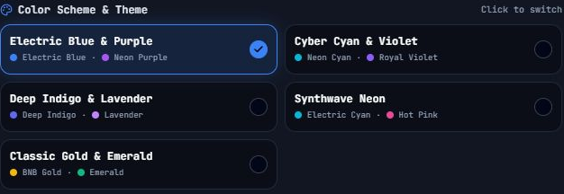
Windows startup and closing DEKXDIS
In Settings, enable Start with Windows and restart after a crash to launch DEKXDIS when you sign in to Windows and restart it after an unexpected exit. It is off by default. Keep the executable in a stable location; if you move it, turn the setting off and on from the new location to update the startup path.
Closing the main window opens Close DEKXDIS?. Choose Keep DEKXDIS running to return, or Close DEKXDIS to exit. A confirmed manual close keeps the app closed rather than triggering an immediate restart.
Orders already submitted to CoW may remain active and fill until they expire or are cancelled. DEKXDIS must be running and connected to trigger local stops, create attached exits after a buy, or cancel an opposite OCO order after a fill. Minimizing the app or viewing Overview leaves its background monitoring running.
Download the source code and build the Windows app
This section is for anyone who wants to inspect the program before using it or build a copy from reviewed source. If you only want to use DEKXDIS, return to Download and open the Windows app.
Install the Windows build tools
- Install Git for Windows.
- Install the current Node.js LTS release. Open a new PowerShell window afterward.
- Install Microsoft C++ Build Tools. In the installer, select Desktop development with C++.
- Install Rust with rustup and use the stable MSVC toolchain. In PowerShell,
rustup default stable-msvcselects it. - Make sure the Microsoft Edge WebView2 Runtime is installed. It is normally already included with current Windows 10 and Windows 11 systems.
The official Tauri Windows prerequisites page has the current installation details for these tools.
Get the source and create the executable
On the DEKXDIS source repository, select Code and Download ZIP, then extract the ZIP. Alternatively, open PowerShell in the folder where you want the project and clone it with Git:
git clone https://github.com/DEKXDIS/DEKXDIS.git
cd DEKXDISOpen PowerShell in the extracted or cloned DEKXDIS folder, then run:
npm ci
npm run tauri:buildnpm ci installs the exact JavaScript packages recorded in package-lock.json. npm run tauri:build first builds the React interface, then compiles the Windows Tauri application.
Build in a separate source folder if you want to keep your current DEKXDIS session running. Windows cannot overwrite an executable that is in use. If the output file is locked, use a separate build folder or close that copy only when you are ready to stop its local monitoring.
When the build succeeds, the executable is:
src-tauri\target\release\DEKXDIS.exeDouble-click that file to run the build. The current Tauri configuration creates a standalone executable and has installer bundling turned off. It does not create an MSI or setup program, and it does not digitally sign the executable.
Safety checklist
- Never share a private key or recovery phrase. DEKXDIS support—or anyone pretending to be support—does not need it.
- Save the recovery phrase and complete private key shown for your wallet offline before adding funds. The public receiving address cannot restore access.
- Verify both network and address before every transfer; make a small test transfer first.
- Keep enough native asset for fees on each network you use.
- Review approval, trade, wrap, cancel, and bridge details before confirming them.
- Check order and bridge status; a submitted instruction is not necessarily a finished result.
- Keep DEKXDIS open and connected when relying on local stops, attached exits, or OCO cancellation.
Updates
DEKXDIS checks for updates when it starts and every 24 hours while it remains open. The anonymous check does not send your wallet details or trading data. When a newer version is available, an Update available on GitHub badge appears in the top bar.
DEKXDIS does not update itself. Select the badge to open the official GitHub repository, then download the newest release or build it from source. Your keys and saved app data remain on your computer in a Windows-protected encrypted store. An official update reopens that store when you run it under the same Windows account. Keep your wallet backup safe.
Always download DEKXDIS from the official GitHub repository.
Legal disclaimer
DEKXDIS and this guide are provided “as is” and “as available,” without warranties of any kind, to the fullest extent permitted by law. Use is entirely at your own risk. Nothing in DEKXDIS or this guide is financial, investment, tax, or legal advice.
You are responsible for your trading decisions, transactions, wallet backups, keys, device security, and compliance with applicable laws. Digital assets can lose all of their value. Transactions may be irreversible, and software, networks, exchanges, solvers, bridges, and other third-party services may fail.
To the fullest extent permitted by law, DEKXDIS’s developers, contributors, and operators disclaim all liability for any claims, losses, damages, costs, or expenses arising from the use of, or inability to use, DEKXDIS or this guide, including loss of funds, tokens, keys, data, profits, or access, regardless of cause or legal theory. No statement here excludes a right or liability that applicable law does not allow to be excluded.